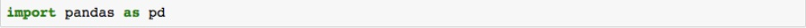

Web scraping is a process of collecting data from a webpage. This page will show how to fetch data from a website. I am using BeautifulSoup to fetch data from IMDB webpage.
Step 1:
Installing packages,
If you have Anaconda then by default you will be having BeautifulSoup installed. BeautifySoup is a python package used for web scraping. If not, Open a terminal and write down the following command.
After executing the command you will get a successfully installed message.
Step 2:
Open Anaconda Jupyter Notebook and create a new project(Example-:Project Name:IMDB)
If you are new to Jupyter Notebook and you have installed Anaconda previously in your system than these are the simple steps to open a Notebook.
Once you execute the command you will see that the kernels gets activated and you will find the following description in the output
Copy and paste the URL in your browser.
Include the following statement into code cell
Here, bs4 is beautifulSoup4 which is used for pulling HTML and XML files which contains data.
Now let's import libraries
Select a webpage from where you want to pull the data. Take any open source webpage. I am using imdb webpage.
Store the web response in parser_html. This is a python library use to parse in a linear or nested structure.
Go to IMDB webpage, right click on the page and select Inspect.
From this page I want to get the movie name, movie rank and user rating which is present in class lister-item mode-grid.
Using html parser we will find all the grids having class name lister-item mode-grid
Now we need to store the extracted values. To store the fetched data we will create 3 empty lists as below,
We will fetch all the grid data having movie name, rank and user rating
Getting the Titles
Getting the Ranks
Getting User Ratings
we have successfylly fetched data from the page.
Now let us beautify the data by arranging in a readable format using dataframe

Give header names for each column
To see if the data is arranged properly let us print the first 10 rows,
if you want to see the whole data then dont include n=10

Now we have the data as per our requirement. so let us store the data into csv file
And we have data for out analysis!!